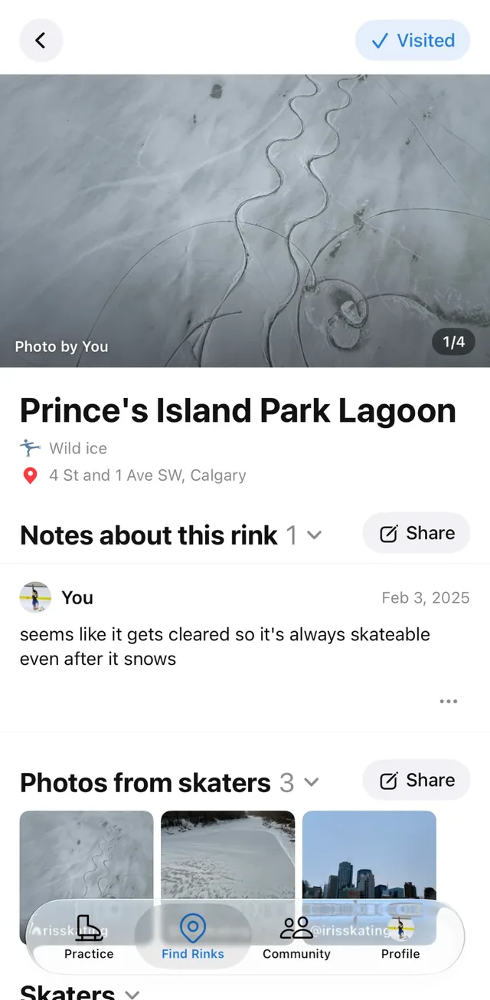
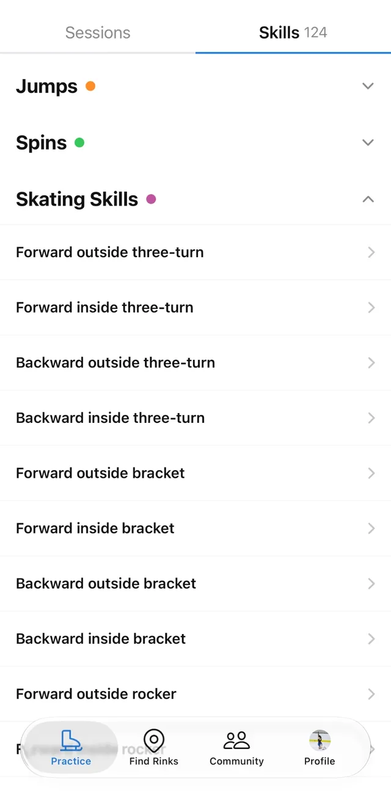

Rinkfolio: Find, log and share skating
A rink map, a skating journal and a community all in one app.
Find rinks
Browse a worldwide map of indoor and outdoor ice rinks, as well as wild ice spots. Save the ones you want to visit, mark the ones you've skated at, and set your home rink(s).

Log every visit
Add a note and photos to each session, so you can look back on where you skated and how it went.

Track your skills
Keep a list of your skills with key things to remember, move each one through its milestones, and use them to plan your practice sessions.

Skate with others
Follow other skaters, see their activity and share your profile with a link or QR code.

Rinkfolio is built with feedback from the skaters who use it. Questions or ideas? Email rinkfolioapp@gmail.com.